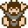
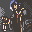
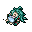
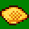
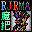
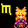
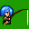

[ HOME ]
[ 表彰会場 ]
[ チーム勝敗 ]
[ 総合順位 ]
[ 総合順位(簡易版) ]
[ 熱中度 ]
[ 技術 ]
[ 物語 ]
[ 演出 ]
[ 斬新さ ]
[ 遊びやすさ ]
[ テラワロさ ]
[ いやらしさ ]
[ ひどさ ]
[ その他 ]
| [全件]（79件） を降順に表示 |
総合順位
すべての部門から総合的に評価します。
得点計算式
９部門小計点 + ( その他加点 × 遅刻補正 )遅刻補正： 遅刻提出の場合、[ その他加点 ]を 2 で割る）
|
【1位】
No.033 さよなら、モナーＲＰＧ。
( 合計点 572.8 pt / 117 票 / 提出済) 熱 80 pt + 技 60 pt + 語 80 pt + 演 80 pt + 斬 74 pt + 遊 78 pt + 笑 30 pt + 猥 42 pt + 酷 29 pt + 他 19.8 pt |
|
| 【コメント】時代の流れの残酷さを考えさせられましたが、久しく活躍した2chのキャラクター達を見て、とても嬉しく思えました。この作品を作っていただきまして本当にありがとうございます。 |
|
【2位】
No.016 ケツアクメ120連発 ケツアヘ傑作選
( 合計点 540.8 pt / 51 票 / 提出済) 熱 36 pt + 技 50 pt + 語 32 pt + 演 65 pt + 斬 58 pt + 遊 76 pt + 笑 80 pt + 猥 55 pt + 酷 78 pt + 他 10.8 pt |
|
| 【コメント】早口とキレ芸の様式美-viprpg- |
|
【3位】
No.017 やみいっちゃんとエッチなことをするゲーム
( 合計点 533.3 pt / 51 票 / 提出済) 熱 30 pt + 技 46 pt + 語 40 pt + 演 72 pt + 斬 55 pt + 遊 44 pt + 笑 73 pt + 猥 80 pt + 酷 79 pt + 他 14.3 pt |
|
| 【コメント】 この項目は編纂情報のみを掲載しています。紹介文・画像・関連リンクは表示していません。 |
 |
【4位】
No.063 SLASH -THE DEMON HUNTER-
( 合計点 520.3 pt / 43 票 / 提出済) 熱 28 pt + 技 73 pt + 語 39 pt + 演 76 pt + 斬 76 pt + 遊 52 pt + 笑 76 pt + 猥 11 pt + 酷 76 pt + 他 13.3 pt |
|---|---|
| 【コメント】よくここまでレトロゲームを再現した!感動した!それにしてもなにこの無駄に有り余るハイテクノロジー |
|
【5位】
No.053 百合っぽいお話とか
( 合計点 515.2 pt / 49 票 / 提出済) 熱 76 pt + 技 38 pt + 語 78 pt + 演 71 pt + 斬 28 pt + 遊 73 pt + 笑 43 pt + 猥 73 pt + 酷 19 pt + 他 16.2 pt |
|
| 【コメント】暫定ベスト見るゲ。純粋にほのぼの話としても一級品。 |
|
【6位】
No.003 闇市ダンジョン
( 合計点 511.4 pt / 51 票 / 遅刻提出) 熱 73 pt + 技 76 pt + 語 63 pt + 演 60 pt + 斬 59 pt + 遊 29 pt + 笑 64 pt + 猥 59 pt + 酷 20 pt + 他 8.4 pt |
|
| 【コメント】ウィンドちゃん、やみいち×わてりを認めて下さい。 |
|
【7位】
No.054 八大地獄と極楽ぬくぬくヘルス温泉
( 合計点 507.9 pt / 39 票 / 提出済) 熱 55 pt + 技 35 pt + 語 58 pt + 演 64 pt + 斬 61 pt + 遊 35 pt + 笑 68 pt + 猥 59 pt + 酷 57 pt + 他 15.9 pt |
|
| 【コメント】ギミック尽くしのゲームで楽しめました。キャラクタの総数は数えていませんが、台詞のあるものだけでも300を超えるんじゃないでしょうか。特に、台詞を設定する上で個々のキャラクタの特性を把握し考量し切る作業は、生半可の作業量ではなかったはずです。 |
|
【8位】
No.078 わてりとたのしいセクロス
( 合計点 476.9 pt / 43 票 / 提出済) 熱 68 pt + 技 77 pt + 語 6 pt + 演 60 pt + 斬 65 pt + 遊 73 pt + 笑 39 pt + 猥 51 pt + 酷 25 pt + 他 12.9 pt |
|
| 【コメント】アクション苦手な俺でも数回でクリアできた! |
|
【9位】
No.055 ABCD冒険記
( 合計点 463.2 pt / 39 票 / 提出済) 熱 75 pt + 技 58 pt + 語 50 pt + 演 47 pt + 斬 36 pt + 遊 67 pt + 笑 57 pt + 猥 31 pt + 酷 28 pt + 他 14.2 pt |
|
| 【コメント】勇者パーティーのクソさに苦笑しながら厳しい戦いを乗り越えるはちくまライクデフォ戦ゲー。この紅白でも熱中度では一押しです。 |
|
【10位】
No.085 エターナルデフォルト フライングエタリー
( 合計点 451.7 pt / 39 票 / 提出済) 熱 63 pt + 技 47 pt + 語 53 pt + 演 77 pt + 斬 39 pt + 遊 48 pt + 笑 36 pt + 猥 59 pt + 酷 13 pt + 他 16.7 pt |
|
| 【コメント】絵が本当に上手くて世界観にピッタリ!素直に感動しました。 |
|
【11位】
No.034 ナイ軍の借金返済作戦
( 合計点 447.6 pt / 42 票 / 提出済) 熱 55 pt + 技 26 pt + 語 72 pt + 演 53 pt + 斬 22 pt + 遊 66 pt + 笑 67 pt + 猥 50 pt + 酷 25 pt + 他 11.6 pt |
|
| 【コメント】短編の連続という形で、サクサクと楽しくプレイができました。ナイ軍の面々がそれぞれ一生懸命仕事をこなしていく様が素敵。ただちょっと、メアリ・スー的なキャラ設定になっている人物のキャラが居たのが個人的に気になりました。 |
|
【12位】
No.046 ソーレソレソレ
( 合計点 435.0 pt / 54 票 / 提出済) 熱 65 pt + 技 17 pt + 語 5 pt + 演 37 pt + 斬 77 pt + 遊 74 pt + 笑 76 pt + 猥 2 pt + 酷 74 pt + 他 8.0 pt |
|
| 【コメント】揃わない、訴訟 |
|
【13位】
No.088 鬼バリア
( 合計点 433.5 pt / 30 票 / 提出済) 熱 63 pt + 技 63 pt + 語 27 pt + 演 44 pt + 斬 47 pt + 遊 64 pt + 笑 45 pt + 猥 23 pt + 酷 46 pt + 他 11.5 pt |
|
| 【コメント】せっかくだから青バリアは貰っていきます。容赦せんっ |
|
【14位】
No.052 勇者わてりの大冒険 と ふれいむさんの気だるい日常
( 合計点 395.3 pt / 30 票 / 提出済) 熱 37 pt + 技 57 pt + 語 40 pt + 演 69 pt + 斬 54 pt + 遊 52 pt + 笑 21 pt + 猥 45 pt + 酷 8 pt + 他 12.3 pt |
|
| 【コメント】エフェクトやマップのギミックがすごい。難易度も適度にストレスフルで難しすぎないのがグッド。 |
|
【15位】
No.082 絶壁天国＋リリア・キングフォーム
( 合計点 364.4 pt / 28 票 / 提出済) 熱 16 pt + 技 16 pt + 語 21 pt + 演 49 pt + 斬 37 pt + 遊 10 pt + 笑 68 pt + 猥 66 pt + 酷 77 pt + 他 4.4 pt |
|
| 【コメント】もうリリアさん最強すぎてコメントができねェ…… |
|
【16位】
No.013 埋もれた素材の夢
( 合計点 321.8 pt / 35 票 / 提出済) 熱 45 pt + 技 22 pt + 語 68 pt + 演 48 pt + 斬 26 pt + 遊 55 pt + 笑 21 pt + 猥 17 pt + 酷 7 pt + 他 12.8 pt |
|
| 【コメント】素材の使い方が上手で戦闘のバランスも良く、プレイヤーに優しい工夫もされていて一気にクリアしてしまいました。神父はこんなにかっこよかったのか……。 |
 |
【17位】
No.004 プロフェシーへの回帰
( 合計点 318.4 pt / 22 票 / 提出済) 熱 57 pt + 技 10 pt + 語 61 pt + 演 25 pt + 斬 52 pt + 遊 34 pt + 笑 52 pt + 猥 7 pt + 酷 10 pt + 他 10.4 pt |
|---|---|
| 【コメント】クトゥルフTRPGの導入としても、シナリオリプレイとしても、また一つの読み物としても、とても読みやすくまた読んでいて楽しかったです。 |
|
【18位】
No.095 地獄探偵おぼなす
( 合計点 307.1 pt / 32 票 / 遅刻提出) 熱 11 pt + 技 10 pt + 語 35 pt + 演 17 pt + 斬 23 pt + 遊 36 pt + 笑 61 pt + 猥 36 pt + 酷 74 pt + 他 4.1 pt |
|
| 【コメント】NINJAこわい |
 |
【19位】
No.026 いつか見た夢の続きを
( 合計点 289.4 pt / 48 票 / 提出済) 熱 35 pt + 技 22 pt + 語 53 pt + 演 26 pt + 斬 29 pt + 遊 25 pt + 笑 27 pt + 猥 46 pt + 酷 18 pt + 他 8.4 pt |
|---|---|
| 【コメント】体を鍛えて行動範囲を増やすのが面白い。少々システム説明不足だった感はあったけど、楽しませてもらいました。 |
|
【20位】
No.073 完全3D迷路
( 合計点 274.5 pt / 31 票 / 提出済) 熱 16 pt + 技 77 pt + 語 8 pt + 演 29 pt + 斬 75 pt + 遊 57 pt + 笑 3 pt + 猥 4 pt + 酷 4 pt + 他 1.5 pt |
|
| 【コメント】「なにこれすげええええええええええええええええええええええええええええええええええ!!!!!??」としか言えない。 |
|
【21位】
No.035 Mega Moshimo
( 合計点 271.8 pt / 29 票 / 提出済) 熱 45 pt + 技 75 pt + 語 10 pt + 演 36 pt + 斬 48 pt + 遊 32 pt + 笑 9 pt + 猥 4 pt + 酷 6 pt + 他 6.8 pt |
|
| 【コメント】HPアップ、MPアップなどのアイテム集めをしているときが最も夢中になった時間だった。特殊武器を使えば、難易度もそう高すぎない。クリアまで一気にやった。面白いです、はい。 |
|
【22位】
No.005 Re:0
( 合計点 270.3 pt / 25 票 / 遅刻提出) 熱 59 pt + 技 32 pt + 語 58 pt + 演 46 pt + 斬 13 pt + 遊 28 pt + 笑 10 pt + 猥 12 pt + 酷 6 pt + 他 6.3 pt |
|
| 【コメント】今回の祭りで一番遊びやすいデフォ戦ゲームだった。 |
|
【23位】
No.070 Revenge of a "AMEN GORILLA" -1997-
( 合計点 261.9 pt / 21 票 / 提出済) 熱 24 pt + 技 30 pt + 語 10 pt + 演 58 pt + 斬 60 pt + 遊 12 pt + 笑 19 pt + 猥 6 pt + 酷 36 pt + 他 6.9 pt |
|
| 【コメント】カオスなのか。サイコなのか。ホラーなのか。アウトサイダーなのか。 |
|
【24位】
No.051 海賊リメイクオーバーリローテッドセカンド
( 合計点 258.8 pt / 25 票 / 遅刻提出) 熱 52 pt + 技 57 pt + 語 14 pt + 演 12 pt + 斬 51 pt + 遊 16 pt + 笑 27 pt + 猥 7 pt + 酷 19 pt + 他 3.8 pt |
|
| 【コメント】本気でおもしろかったUIが若干使いにくいことと最後まで完成していないことだけが残念 |
|
【25位】
No.079 101人のブライアン
( 合計点 248.1 pt / 26 票 / 遅刻提出) 熱 40 pt + 技 10 pt + 語 13 pt + 演 12 pt + 斬 40 pt + 遊 31 pt + 笑 52 pt + 猥 6 pt + 酷 42 pt + 他 2.1 pt |
|
| 【コメント】ブライアン好きに送るブライアン収集ゲー。色んなブライアンが楽しい。 |
 |
【26位】
No.086 たてもの脱出ゲーム
( 合計点 245.7 pt / 20 票 / 提出済) 熱 29 pt + 技 18 pt + 語 12 pt + 演 22 pt + 斬 59 pt + 遊 9 pt + 笑 31 pt + 猥 28 pt + 酷 34 pt + 他 3.7 pt |
|---|---|
| 【コメント】オブジェクトの調べ判定がシビアだったように思えるけどファイアⅡちゃんが可愛いからどうでもよかった。 |
|
【27位】
No.007 ある日のナイ軍 ～冬こそ南の島で暖まろうぜSP～
( 合計点 243.3 pt / 36 票 / 提出済) 熱 25 pt + 技 14 pt + 語 65 pt + 演 36 pt + 斬 14 pt + 遊 19 pt + 笑 42 pt + 猥 11 pt + 酷 8 pt + 他 9.3 pt |
|
| 【コメント】今回の祭りでのベストナイ軍作品 |
 |
【28位】
No.009 DARK★HELL
( 合計点 234.7 pt / 30 票 / 提出済) 熱 50 pt + 技 39 pt + 語 10 pt + 演 25 pt + 斬 18 pt + 遊 58 pt + 笑 12 pt + 猥 10 pt + 酷 6 pt + 他 6.7 pt |
|---|---|
| 【コメント】おばけかわいいです。ゴス子無双でした |
|
【29位】
No.094 モテるツクール女子力を磨く為の4つの心得
( 合計点 229.4 pt / 21 票 / 提出済) 熱 12 pt + 技 10 pt + 語 12 pt + 演 12 pt + 斬 12 pt + 遊 18 pt + 笑 44 pt + 猥 53 pt + 酷 54 pt + 他 2.4 pt |
|
| 【コメント】ツクール女子力という謎ステータスを真面目に解説するのが面白い。 |
|
【30位】
No.064 いちめんのksgコレクション
( 合計点 227.9 pt / 18 票 / 提出済) 熱 20 pt + 技 12 pt + 語 44 pt + 演 13 pt + 斬 16 pt + 遊 28 pt + 笑 42 pt + 猥 28 pt + 酷 22 pt + 他 2.9 pt |
|
| 【コメント】常識の場外駐車場までブッ飛んだお話はないけど小さくまとまった良質(ksg)の見るゲがいっぱいで記憶に残ってますキャラプッシュの歴史を感じるのは、気のせいだろうか…w |
|
【31位】
No.061 JASIN
( 合計点 227.5 pt / 23 票 / 提出済) 熱 50 pt + 技 42 pt + 語 56 pt + 演 34 pt + 斬 12 pt + 遊 12 pt + 笑 4 pt + 猥 4 pt + 酷 4 pt + 他 9.5 pt |
|
| 【コメント】内容もゲームバランスも、セリフ回しも最高だった。何よりみんなイケメン杉惚れた。 |
|
【32位】
No.039 リハビリその４
( 合計点 223.3 pt / 23 票 / 提出済) 熱 9 pt + 技 62 pt + 語 7 pt + 演 60 pt + 斬 52 pt + 遊 10 pt + 笑 10 pt + 猥 4 pt + 酷 8 pt + 他 1.3 pt |
|
| 【コメント】ストーリーパート含め全部デフォ戦という技術力に惹かれる。戦闘演出もかっこいい! |
|
【33位】
No.050 BRAVELY WORKING FLYING妖精さん
( 合計点 207.9 pt / 14 票 / 提出済) 熱 8 pt + 技 10 pt + 語 5 pt + 演 10 pt + 斬 12 pt + 遊 10 pt + 笑 34 pt + 猥 56 pt + 酷 62 pt + 他 0.9 pt |
|
| 【コメント】作者は脳味噌を洗った方がいい |
|
【34位】
No.038 Temple of Shadows
( 合計点 207.7 pt / 19 票 / 提出済) 熱 16 pt + 技 49 pt + 語 29 pt + 演 20 pt + 斬 18 pt + 遊 46 pt + 笑 12 pt + 猥 4 pt + 酷 6 pt + 他 7.7 pt |
|
| 【コメント】RPGというより謎解きメインに感じたもうちょっと謎解きにはヒント欲しいッス |
|
【35位】
No.092 マニラの西48km
( 合計点 206.5 pt / 25 票 / 提出済) 熱 12 pt + 技 8 pt + 語 13 pt + 演 13 pt + 斬 20 pt + 遊 10 pt + 笑 59 pt + 猥 15 pt + 酷 55 pt + 他 1.5 pt |
|
| 【コメント】ドラ子ォーー! |
|
【36位】
No.084 windy posession
( 合計点 185.1 pt / 13 票 / 遅刻提出) 熱 24 pt + 技 50 pt + 語 10 pt + 演 12 pt + 斬 30 pt + 遊 10 pt + 笑 11 pt + 猥 30 pt + 酷 6 pt + 他 2.1 pt |
|
| 【コメント】ウインドちゃんがしんでるのがおもしろかったですでもちょっとむずかしーかも・・・!? >< |
|
【37位】
No.042 魔王の挑戦状
( 合計点 182.7 pt / 22 票 / 提出済) 熱 41 pt + 技 16 pt + 語 39 pt + 演 10 pt + 斬 26 pt + 遊 32 pt + 笑 4 pt + 猥 4 pt + 酷 4 pt + 他 6.7 pt |
|
| 【コメント】シンプルながらも色々な戦法を試したくなるスルメゲー。装備との組み合わせと選択できる行動がランダムでいい緊張感を生み出してて面白い。 |
|
【38位】
No.072 ウィンドⅠのおつかい外伝～カナエール様は心配性～
( 合計点 182.1 pt / 25 票 / 提出済) 熱 32 pt + 技 10 pt + 語 42 pt + 演 14 pt + 斬 10 pt + 遊 13 pt + 笑 13 pt + 猥 37 pt + 酷 7 pt + 他 4.1 pt |
|
| 【コメント】ウィンディが幸せになりますように。ぺろぺろ |
|
【39位】
No.032 タイトルが未定みていな俺コレクション
( 合計点 178.5 pt / 17 票 / 提出済) 熱 10 pt + 技 10 pt + 語 34 pt + 演 12 pt + 斬 12 pt + 遊 10 pt + 笑 10 pt + 猥 67 pt + 酷 10 pt + 他 3.5 pt |
|
| 【コメント】ちょっとえっちな作品が多いコレクションで、どれもよくできていると思いました |
|
【40位】
No.058 桃色通信6月号
( 合計点 164.0 pt / 18 票 / 提出済) 熱 12 pt + 技 8 pt + 語 14 pt + 演 14 pt + 斬 12 pt + 遊 10 pt + 笑 7 pt + 猥 75 pt + 酷 9 pt + 他 3.0 pt |
|
| 【コメント】嫁様の乳輪のでかさが一番印象に残ってしまった・・。 |
|
【41位】
No.001 MAGIC BATTLE
( 合計点 161.9 pt / 17 票 / 提出済) 熱 12 pt + 技 46 pt + 語 7 pt + 演 46 pt + 斬 24 pt + 遊 14 pt + 笑 2 pt + 猥 2 pt + 酷 6 pt + 他 2.9 pt |
|
| 【コメント】演出などで魅せてくる、面白い自作戦闘ゲーの体験版!完成、楽しみにしています |
|
【42位】
No.010 MOSIMO QUEST II
( 合計点 157.4 pt / 17 票 / 提出済) 熱 34 pt + 技 12 pt + 語 53 pt + 演 10 pt + 斬 10 pt + 遊 6 pt + 笑 12 pt + 猥 6 pt + 酷 10 pt + 他 4.4 pt |
|
| 【コメント】非常に楽しめる作品でした。 |
|
【43位】
No.023 ドキ☆ gomezだらけの危ない学園生活 ～あなたはゴメスを信じますか？～
( 合計点 153.8 pt / 12 票 / 提出済) 熱 7 pt + 技 6 pt + 語 10 pt + 演 10 pt + 斬 32 pt + 遊 10 pt + 笑 18 pt + 猥 6 pt + 酷 53 pt + 他 1.8 pt |
|
| 【コメント】どうしてこんなに頑張っちゃったの(褒め言葉) |
|
【44位】
No.027 アブソーバーヒストリー
( 合計点 150.2 pt / 20 票 / 提出済) 熱 13 pt + 技 22 pt + 語 9 pt + 演 31 pt + 斬 12 pt + 遊 42 pt + 笑 7 pt + 猥 4 pt + 酷 7 pt + 他 3.2 pt |
|
| 【コメント】自分の好き×好きでゲーム作る姿勢は好感度をもてます。チャックくんぬいぐるみっぽいですよね。アニメーションかっこいい。 |
|
【45位】
No.076 ほのぼのねこねこ～核にゃんと霊にゃんのにゃんにゃん物語だにゃん♪～
( 合計点 148.6 pt / 16 票 / 提出済) 熱 12 pt + 技 8 pt + 語 11 pt + 演 11 pt + 斬 11 pt + 遊 11 pt + 笑 14 pt + 猥 52 pt + 酷 15 pt + 他 3.6 pt |
|
| 【コメント】作風が可愛い 絵も可愛い 紙芝居のとこが好き |
|
【46位】
No.074 ライチのぼうけん
( 合計点 145.5 pt / 16 票 / 提出済) 熱 9 pt + 技 6 pt + 語 8 pt + 演 9 pt + 斬 11 pt + 遊 8 pt + 笑 33 pt + 猥 6 pt + 酷 54 pt + 他 1.5 pt |
|
| 【コメント】2003のデフォ戦がすばらしかった。これは万人にオススメできるぞ超展開に感動した。船のふいんきが最高でやる気のなさに泣けた。エンディングでなにか大切なものを失った気持ちにさせられたたた |
|
【47位】
No.031 独白◆幻肢痛と薔薇に心捧ぐ
( 合計点 143.7 pt / 15 票 / 提出済) 熱 10 pt + 技 10 pt + 語 10 pt + 演 12 pt + 斬 10 pt + 遊 10 pt + 笑 39 pt + 猥 16 pt + 酷 26 pt + 他 0.7 pt |
|
| 【コメント】一番下のアレックスは反則wwwwwwwwwwww |
|
【48位】
No.069 三行でわかるキャッペソフト
( 合計点 138.2 pt / 9 票 / 提出済) 熱 2 pt + 技 4 pt + 語 60 pt + 演 7 pt + 斬 10 pt + 遊 6 pt + 笑 10 pt + 猥 7 pt + 酷 32 pt + 他 0.2 pt |
|
| 【コメント】本当に3行で紹介するだけ。なのでコメント不能。 |
|
【49位】
No.067 もしも in Real World ～アベ・レクイエム～
( 合計点 136.2 pt / 10 票 / 提出済) 熱 10 pt + 技 12 pt + 語 14 pt + 演 14 pt + 斬 12 pt + 遊 15 pt + 笑 24 pt + 猥 6 pt + 酷 26 pt + 他 3.2 pt |
|
| 【コメント】アベックス何しにきたんだwwwwwwwww |
|
【50位】
No.025 SEPPUKU
( 合計点 134.8 pt / 16 票 / 提出済) 熱 24 pt + 技 24 pt + 語 12 pt + 演 11 pt + 斬 20 pt + 遊 8 pt + 笑 14 pt + 猥 4 pt + 酷 14 pt + 他 3.8 pt |
|
| 【コメント】RPGツクール2000でノブヤボ系戦略SLGという夢を叶えて下さった作者様に感謝です! |
|
【51位】
No.060 もしもアレックスだけだったら
( 合計点 123.7 pt / 15 票 / 提出済) 熱 10 pt + 技 6 pt + 語 6 pt + 演 6 pt + 斬 8 pt + 遊 8 pt + 笑 10 pt + 猥 6 pt + 酷 63 pt + 他 0.7 pt |
|
| 【コメント】典型的ksg。最後にしれっとタイトル詐欺したのに笑った。 |
|
【52位】
No.041 Cancel or die
( 合計点 119.8 pt / 16 票 / 提出済) 熱 8 pt + 技 8 pt + 語 8 pt + 演 8 pt + 斬 10 pt + 遊 9 pt + 笑 11 pt + 猥 6 pt + 酷 51 pt + 他 0.8 pt |
|
| 【コメント】やっぱりキャンセルさんはこうでなくっちゃ!悪逆非道メシウマ。鬼畜ファッキン楽しそうでなによりですw |
|
【53位】
No.093 Into the Lilizm
( 合計点 114.2 pt / 10 票 / 提出済) 熱 6 pt + 技 6 pt + 語 10 pt + 演 7 pt + 斬 8 pt + 遊 8 pt + 笑 5 pt + 猥 56 pt + 酷 7 pt + 他 1.2 pt |
|
| 【コメント】最初から最後まで一貫したガチレズゲーでした。 |
|
【54位】
No.075 安心安全マインスイーパ
( 合計点 114.1 pt / 12 票 / 遅刻提出) 熱 13 pt + 技 39 pt + 語 6 pt + 演 10 pt + 斬 12 pt + 遊 16 pt + 笑 8 pt + 猥 4 pt + 酷 5 pt + 他 1.1 pt |
|
| 【コメント】痒いところに手が届くマインスイーパ |
 |
【55位】
No.056 マーミア式Ｋｓｇコレクション
( 合計点 113.8 pt / 10 票 / 提出済) 熱 7 pt + 技 5 pt + 語 8 pt + 演 7 pt + 斬 14 pt + 遊 8 pt + 笑 10 pt + 猥 6 pt + 酷 48 pt + 他 0.8 pt |
|---|---|
| 【コメント】超もしものハイテンション&ハイスピードの展開が面白かったぜ。ブライアンの文字にはちょっとだけ感動。イェイ |
|
【56位】
No.024 VIPツクスレ 勝手に新人賞授賞式’12
( 合計点 111.1 pt / 27 票 / 提出済) 熱 10 pt + 技 10 pt + 語 13 pt + 演 35 pt + 斬 10 pt + 遊 11 pt + 笑 10 pt + 猥 4 pt + 酷 6 pt + 他 2.1 pt |
|
| 【コメント】これは毎年やってほしいレベル |
|
【57位】
No.021 THE 運ゲー ～地底に沈んだ魔王城～
( 合計点 108.8 pt / 10 票 / 提出済) 熱 4 pt + 技 6 pt + 語 48 pt + 演 2 pt + 斬 7 pt + 遊 9 pt + 笑 5 pt + 猥 7 pt + 酷 20 pt + 他 0.8 pt |
|
| 【コメント】ほっかいどうはでっかいどう! |
|
【58位】
No.048 射撃
( 合計点 108.8 pt / 18 票 / 提出済) 熱 10 pt + 技 18 pt + 語 8 pt + 演 12 pt + 斬 10 pt + 遊 18 pt + 笑 10 pt + 猥 13 pt + 酷 7 pt + 他 2.8 pt |
|
| 【コメント】パリンパリン割るのが楽しい |
|
【59位】
No.068 QuizMaogunAcademy
( 合計点 108.5 pt / 17 票 / 遅刻提出) 熱 11 pt + 技 12 pt + 語 10 pt + 演 12 pt + 斬 12 pt + 遊 37 pt + 笑 6 pt + 猥 2 pt + 酷 6 pt + 他 0.5 pt |
|
| 【コメント】演出とかがそれっぽいいいクイズゲーうちのパソコンが低スペックすぎて遊びきれなかったのが残念。 |
|
【60位】
No.028 飢えるハーナス 勝手に続き
( 合計点 106.3 pt / 6 票 / 提出済) 熱 6 pt + 技 6 pt + 語 12 pt + 演 9 pt + 斬 11 pt + 遊 8 pt + 笑 10 pt + 猥 8 pt + 酷 36 pt + 他 0.3 pt |
|
| 【コメント】スレに投下された衝撃的な作品である、「飢えるハーナス」の別作者によるゲームです。より衝撃的でより酷いものになってるとおもいます。本当にどうしてこうなった。 |
|
【61位】
No.065 ファイアーエンブレム もしもの神 未完成版
( 合計点 105.6 pt / 5 票 / 提出済) 熱 14 pt + 技 36 pt + 語 11 pt + 演 8 pt + 斬 12 pt + 遊 11 pt + 笑 6 pt + 猥 2 pt + 酷 4 pt + 他 1.6 pt |
|
| 【コメント】ツクールとFEとVIPRPGの雰囲気が一度に楽しめました。 |
|
【62位】
No.090 R＆W2012 ksg -Ⅹ-
( 合計点 103.8 pt / 16 票 / 提出済) 熱 10 pt + 技 10 pt + 語 10 pt + 演 10 pt + 斬 11 pt + 遊 10 pt + 笑 20 pt + 猥 8 pt + 酷 14 pt + 他 0.8 pt |
|
| 【コメント】ディオナの動きの変態っぷりと食用ゴメスのシンプルさで笑いました。 |
|
【63位】
No.081 奔走するナイ様の死闘
( 合計点 99.4 pt / 16 票 / 遅刻提出) 熱 10 pt + 技 8 pt + 語 13 pt + 演 10 pt + 斬 9 pt + 遊 10 pt + 笑 12 pt + 猥 16 pt + 酷 10 pt + 他 1.4 pt |
|
| 【コメント】ほのぼのとした中、行動動機以外は殺伐とした娘様が良い意味で酷い。いいほのぼのもしも見るゲ―でした。 |
|
【64位】
No.008 もしもアンデッドナイがRPGツクール2003varue+がナイことに怒ったら
( 合計点 97.5 pt / 14 票 / 遅刻提出) 熱 10 pt + 技 8 pt + 語 10 pt + 演 9 pt + 斬 8 pt + 遊 10 pt + 笑 12 pt + 猥 8 pt + 酷 22 pt + 他 0.5 pt |
|
| 【コメント】日輪剣! |
|
【65位】
No.047 もエロゲ
( 合計点 94.9 pt / 14 票 / 提出済) 熱 16 pt + 技 8 pt + 語 8 pt + 演 10 pt + 斬 8 pt + 遊 7 pt + 笑 7 pt + 猥 9 pt + 酷 20 pt + 他 1.9 pt |
|
| 【コメント】空しく虚である世界。人と人の会話も広漠としているぶん、快適さ重視のツクール製作者では敬遠するようなゲーム構成が、逆に発展途上の頃のRPGを思い出させます。粗も多いですが、それ以上に長所も目立つ作品でした。 |
|
【66位】
No.049 ロミくんとジュリちゃん
( 合計点 93.7 pt / 6 票 / 提出済) 熱 7 pt + 技 11 pt + 語 20 pt + 演 8 pt + 斬 11 pt + 遊 6 pt + 笑 14 pt + 猥 6 pt + 酷 8 pt + 他 2.7 pt |
|
| 【コメント】ジュリちゃんまじきtかわいい |
|
【67位】
No.045 偽装のサーカス
( 合計点 90.0 pt / 8 票 / 遅刻提出) 熱 8 pt + 技 6 pt + 語 10 pt + 演 10 pt + 斬 8 pt + 遊 6 pt + 笑 11 pt + 猥 8 pt + 酷 22 pt + 他 1.0 pt |
|
| 【コメント】クソワロタwww人の黒歴史シナリオの秘密を知ってしまったかのような小っ恥ずかしさ。英字の組織名だしとけばスタイリッシュっぽくね?海外の地名だしとけばワールドワイドっぽくね?みたいな、かっこいい処女作=若気の至り全開のあるあるwっ感がすごい。不思議と精神的ダメージをうけたorz |
|
【68位】
No.040 懺悔室
( 合計点 89.6 pt / 11 票 / 提出済) 熱 8 pt + 技 9 pt + 語 12 pt + 演 12 pt + 斬 12 pt + 遊 10 pt + 笑 10 pt + 猥 4 pt + 酷 11 pt + 他 1.6 pt |
|
| 【コメント】哲学的な話に考えさせられ、ギャグ話の酷さに笑わされました。 |
|
【69位】
No.062 宝石洞窟
( 合計点 82.6 pt / 16 票 / 提出済) 熱 12 pt + 技 12 pt + 語 6 pt + 演 9 pt + 斬 10 pt + 遊 10 pt + 笑 8 pt + 猥 4 pt + 酷 10 pt + 他 1.6 pt |
|
| 【コメント】宝石を押して同じ色のをくっつけ消すパズルゲーム全体的に可愛らしく、落ち着いた良い雰囲気パズルの難易度は易しいものから難しいものまであり、難しいものが解けると非常に気持ちがいいパズル好きにおすすめパズル部分とksg的ストーリーが完全に分離されているという仕様は少しもったいない感じもした |
|
【70位】
No.014 AsteDream -もしもエルシャダイがRPGだったら-
( 合計点 80.7 pt / 9 票 / 提出済) 熱 6 pt + 技 7 pt + 語 4 pt + 演 11 pt + 斬 10 pt + 遊 10 pt + 笑 10 pt + 猥 10 pt + 酷 12 pt + 他 0.7 pt |
|
| 【コメント】大丈夫だ。問題ない。 |
|
【71位】
No.087 具現体達と散歩道 虹色のコインと謎に包まれし秘宝
( 合計点 78.5 pt / 11 票 / 提出済) 熱 10 pt + 技 10 pt + 語 8 pt + 演 10 pt + 斬 10 pt + 遊 8 pt + 笑 6 pt + 猥 8 pt + 酷 6 pt + 他 2.5 pt |
|
| 【コメント】スク水、メイド服でお散歩しましょう |
|
【72位】
No.030 もしもセイブザクイーン2/3
( 合計点 76.8 pt / 8 票 / 提出済) 熱 10 pt + 技 7 pt + 語 11 pt + 演 10 pt + 斬 8 pt + 遊 10 pt + 笑 6 pt + 猥 6 pt + 酷 4 pt + 他 4.8 pt |
|
| 【コメント】女兵士ちゃんぺろぺろシナリオが感動した。偽勇者とか。 |
|
【73位】
No.071 三将軍の毎日ダンジョン
( 合計点 73.0 pt / 16 票 / 提出済) 熱 12 pt + 技 6 pt + 語 6 pt + 演 6 pt + 斬 8 pt + 遊 10 pt + 笑 10 pt + 猥 4 pt + 酷 10 pt + 他 1.0 pt |
|
| 【コメント】敵の配置などでクスリと来る。軽く遊べるデフォ戦ゲー買い物が並べられ過ぎてちょっと不便だった気もするけれどもいいゲームでした。玉露可愛いよ玉露。 |
 |
【74位】
No.037 もしもこねくしょん
( 合計点 70.0 pt / 8 票 / 提出済) 熱 4 pt + 技 6 pt + 語 7 pt + 演 8 pt + 斬 12 pt + 遊 8 pt + 笑 10 pt + 猥 4 pt + 酷 10 pt + 他 1.0 pt |
|---|---|
| 【コメント】クーとむーちゃんの出生話が凝ってましたね。優しい感じお悩み相談はテンポあってよかった |
|
【75位】
No.006 わてり/EXTRA
( 合計点 63.6 pt / 13 票 / 提出済) 熱 8 pt + 技 8 pt + 語 4 pt + 演 6 pt + 斬 8 pt + 遊 6 pt + 笑 6 pt + 猥 5 pt + 酷 12 pt + 他 0.6 pt |
|
| 【コメント】がらんどうでksg感溢れるゲームだったけど、スキルポイント制や各階のヘンテコ仕掛けが面白かった。バランスも楽勝なので暇つぶしに進めるにはちょうどいい具合です。ドアがいちいち喋るw |
|
【76位】
No.091 具現化規制法案（仮）（笑）
( 合計点 63.0 pt / 5 票 / 遅刻提出) 熱 3 pt + 技 2 pt + 語 8 pt + 演 3 pt + 斬 3 pt + 遊 2 pt + 笑 4 pt + 猥 2 pt + 酷 36 pt + 他 0.0 pt |
|
| 【コメント】戦闘はなかなか面白かったので丁寧に作ればもっと良くなると思います。 |
|
【77位】
No.057 迷宮組曲
( 合計点 56.6 pt / 9 票 / 提出済) 熱 6 pt + 技 8 pt + 語 6 pt + 演 6 pt + 斬 6 pt + 遊 5 pt + 笑 6 pt + 猥 6 pt + 酷 6 pt + 他 1.6 pt |
|
| 【コメント】ユーザーフレンドリーさに欠けるか。 |
|
【78位】
No.015 英霊旅日記
( 合計点 47.4 pt / 7 票 / 提出済) 熱 4 pt + 技 8 pt + 語 9 pt + 演 6 pt + 斬 5 pt + 遊 4 pt + 笑 3 pt + 猥 4 pt + 酷 3 pt + 他 1.4 pt |
|
| 【コメント】前作を拡張した様なギミックデフォ戦。味方の手数が多い分敵の攻撃も激しくて楽しい。 |
|
【79位】
No.077 俺っクション
( 合計点 43.7 pt / 6 票 / 提出済) 熱 3 pt + 技 7 pt + 語 2 pt + 演 5 pt + 斬 5 pt + 遊 6 pt + 笑 2 pt + 猥 2 pt + 酷 10 pt + 他 1.7 pt |
|
| 【コメント】こんなに強い魔王軍を見たのは久しぶりだったかも…?ヘル様ちょっとカリスマですね。銀髪っ子いっぱい夢いっぱい |
(1/1)